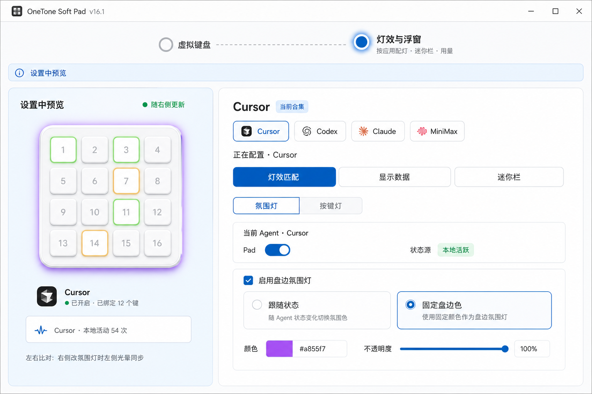
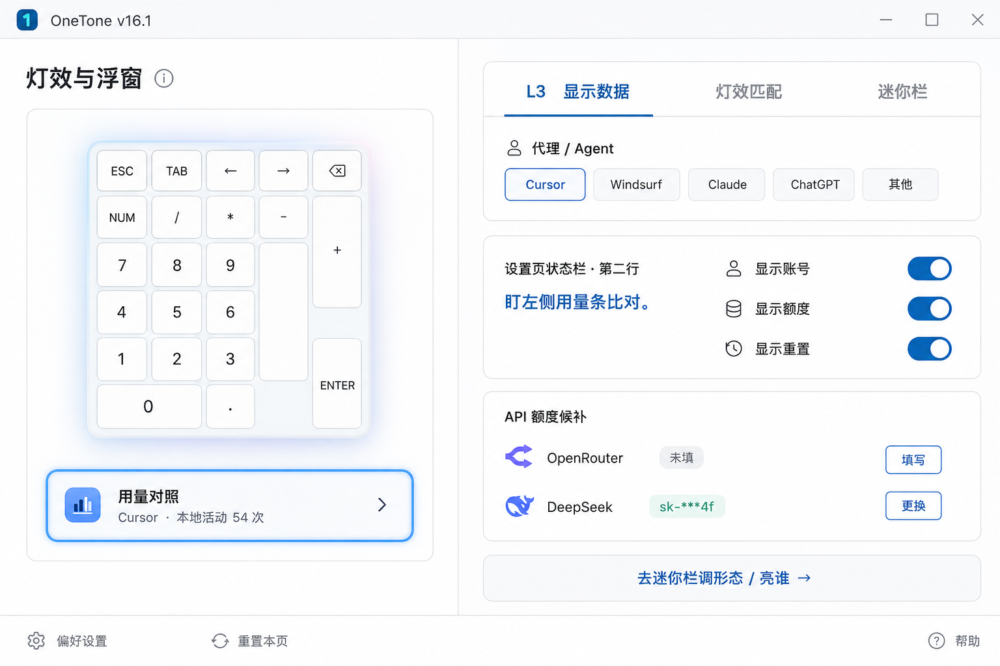
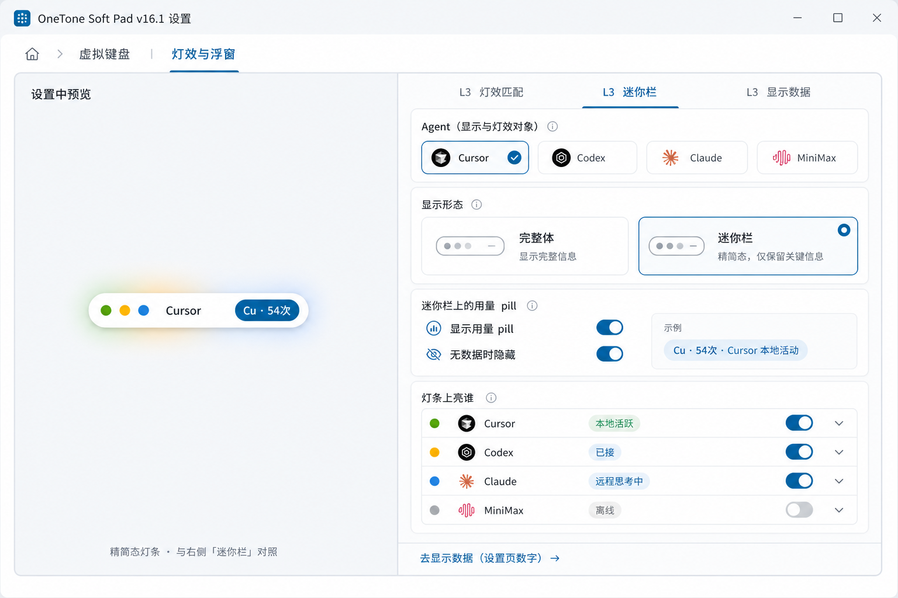

交互真源：lights-peer-workbench.html · 下列静帧 = 产品落地验收图（左预览 | 右配置锁定）
HARD RULE：永不改成上下单列；窄屏横滚match → 整盘 + 氛围光晕 + 键灯
data → 整盘 + 用量对照条
mini → 迷你栏灯条 + pill
（随右侧 L3 实时切换）
Agent chips（Cursor / Codex / …）
L3：灯效匹配 | 显示数据 | 迷你栏
match：接入卡 + L4 氛围灯|按键灯
data ：设置页数字 + API 候补
mini ：形态 + pill + 灯条亮谁
禁止：准备度 / 跨应用 独立 L3
产品落点：#softPadFaceAgent · 运行时浮窗仍走 overlay，本页只配形态与亮谁。


